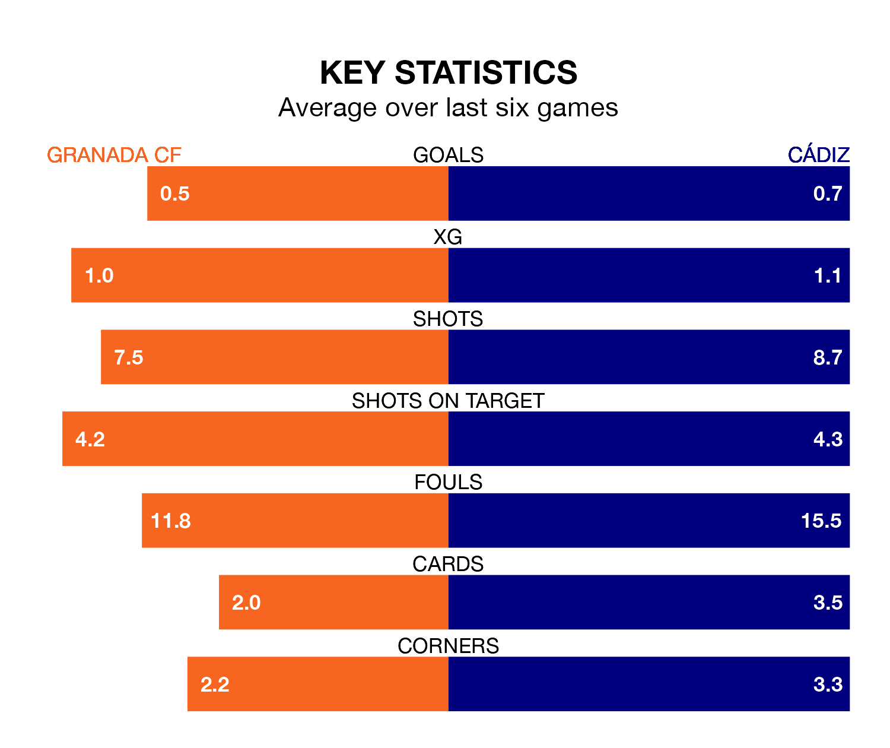

Wednesday's match at the Estadio Nuevo Los Cármenes sees two relegation candidates play each other, as 19th-ranked Granada CF host 17th-placed Cádiz.
Granada have picked up eight points from their first eight La Liga games, with one win and five draws.
That is seven points less than Cádiz have collected, having won two and drawn nine.
Granada are in terrible form in La Liga, with no wins and two draws from their last six games.
With no wins and five draws over that period, Cádiz's form is better – they have taken five points from 18, compared to Granada CF's two.
With 14 goals in 18 games so far this season, the visitors are the league's lowest scorers with 0.8 goals per game. And they are conceding at an average rate, letting in 24 goals at a rate of 1.3 per game.
The home side are also below average scorers, with 1.1 goals per game, compared to a league average of 1.3. They have conceded 2.2 goals per game.
In the last five years, Granada and Cádiz have played each other on six occasions. Cádiz won one of them and they drew the other.
On average, Granada CF scored 0.5 goals and Cádiz 0.7 in those matches.
Their last meeting was on February 28 2022, when they played out a 0-0 draw.
Granada's last match was on December 19, a 3-0 loss against Sevilla.
Cádiz drew 0-0 with Real Sociedad last time out, on December 21.
Wednesday's match will be refereed by Juan Luis Pulido Santana, who has taken charge of nine La Liga games so far this season, issuing two red cards and booking 50 players. He has awarded nine penalties.
The last Granada game Pulido Santana refereed was a 3-1 away loss to Atlético Madrid on August 14. His last Cádiz match was their 3-1 win at home against Villarreal on September 1.
Updated: 10:36, 03/01/24